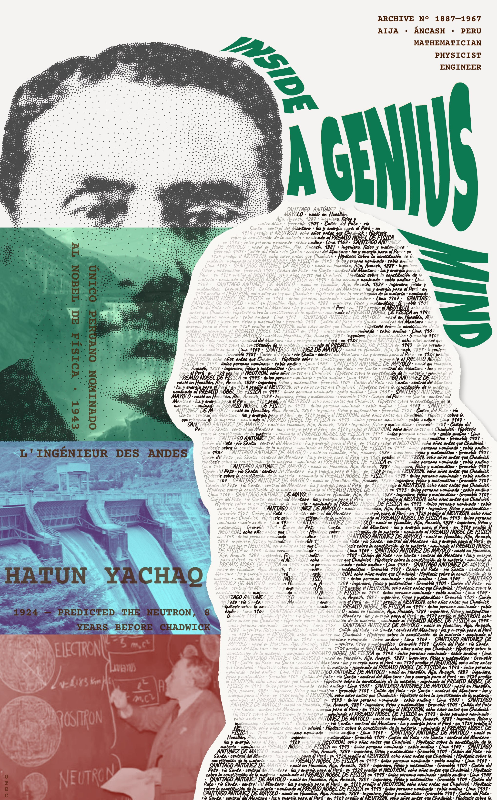
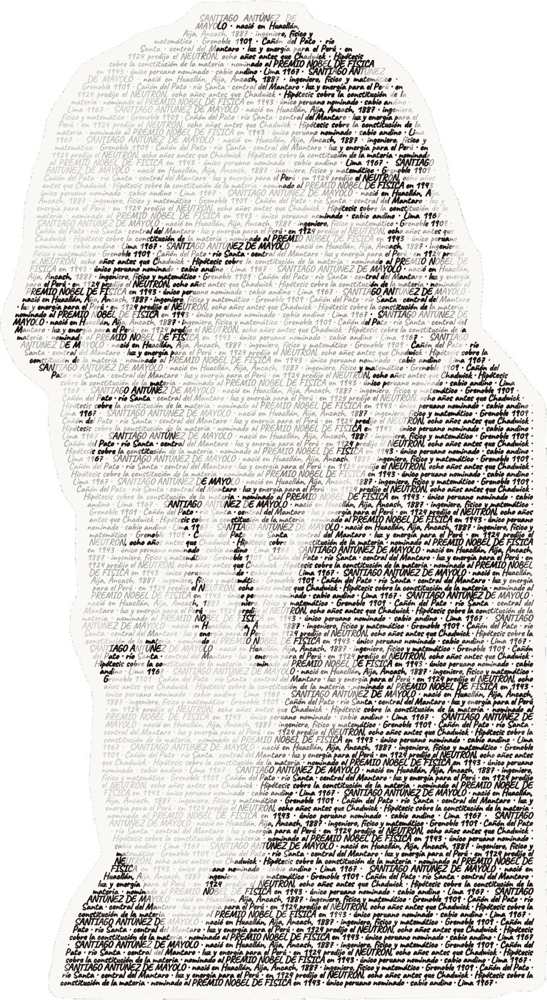
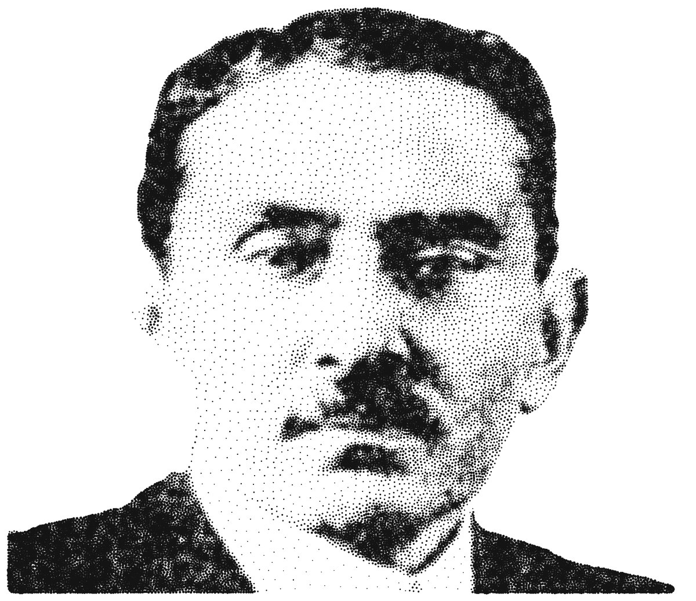
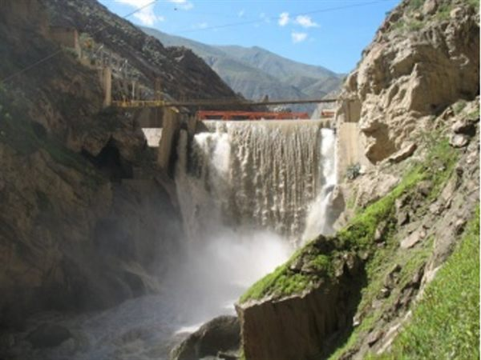
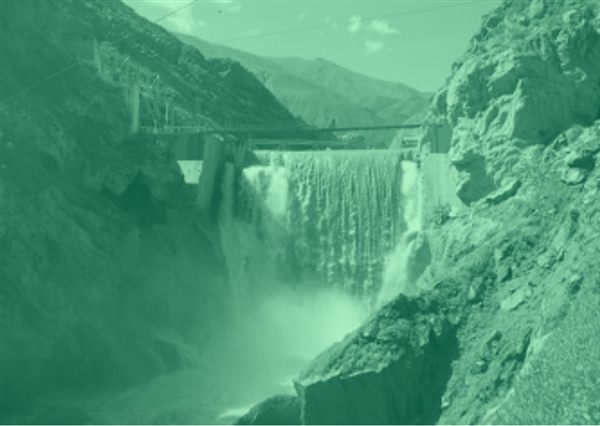
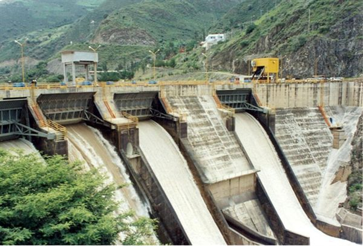
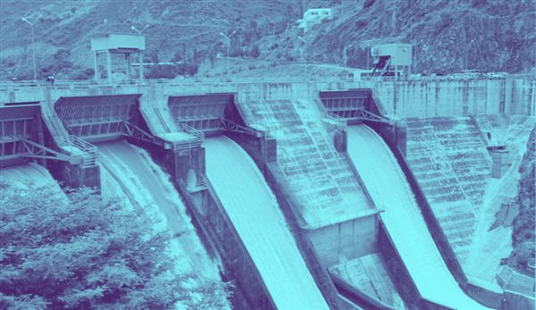
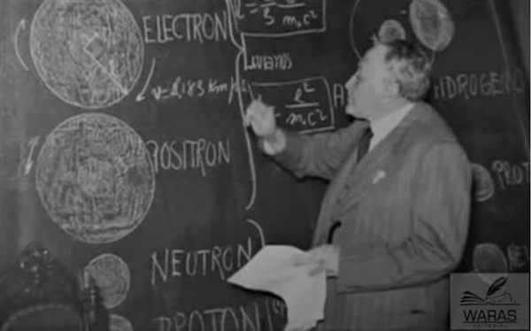
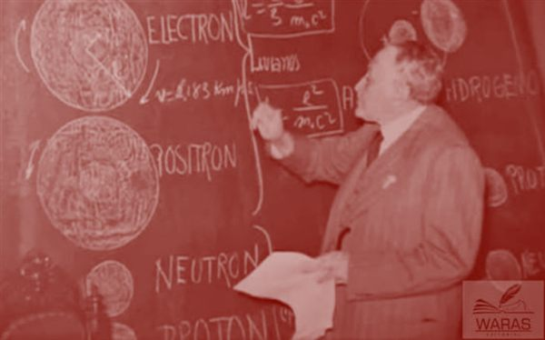

Inside a Genius Mind
Santiago Antúnez de Mayolo (1887–1967)

Sobre el científico
Santiago Antúnez de Mayolo (Huacllán, Áncash, 1887 – Lima, 1967) fue ingeniero, físico y matemático. En 1924 predijo la existencia del neutrón, ocho años antes de que James Chadwick lo descubriera, y en 1943 se convirtió en el único peruano nominado al Premio Nobel de Física. Vio en los Andes una fuente de energía y no un obstáculo: proyectó las centrales hidroeléctricas del Cañón del Pato y del Mantaro, esta última hoy lleva su nombre.
Sobre la obra
Inside a Genius Mind explora la complejidad y grandeza de la mente de Antúnez de Mayolo, resaltando sus trabajos más importantes. Cada decisión estética cumple un propósito.


El retrato caligráfico
Su silueta está escrita con las palabras de su propia vida y obra, como alusión al trabajo escrito del científico: los cuadernos, cálculos e informes donde las ideas existen antes de convertirse en obras.
El retrato punteado
Construido solo con puntos mediante la técnica de punteado de Voronoi, evoca los átomos que estudió: cada punto, como una partícula, forma la figura junto a los demás.
Las centrales y la pizarra
Las franjas de color muestran sus dos grandes centrales hidroeléctricas, el Cañón del Pato y el Mantaro, y la pizarra donde explicaba la estructura de la materia.
Los idiomas
- Español: la lengua de su país.
- Francés: L'ingénieur des Andes, por su formación en Grenoble.
- Inglés: la lengua de la ciencia universal.
- Quechua: Hatun Yachaq, "gran sabio", por su tierra andina.
Proceso y técnicas
Fotografías de archivo
Las imágenes de las centrales hidroeléctricas y de la pizarra son fotografías reales de archivo encontradas en internet. Cada una fue intervenida con un filtro de color plano y ajustes de transparencia para que funcionen como documentos de archivo y dialoguen con los retratos sin competir con ellos.






Caligrama en SVG
El retrato caligráfico fue construido con programación en SVG, un formato vectorial que no pierde calidad al imprimirse en gran tamaño. Está formado por más de 21 000 caracteres de una tipografía manuscrita, cada uno convertido en un trazo vectorial. El texto recorre la silueta y adopta ocho niveles de tono, variando su opacidad y grosor según las luces y sombras de la fotografía original. Filtros SVG de ruido y desplazamiento simulan la irregularidad de la tinta.
Punteado de Voronoi
El segundo retrato está compuesto por 24 000 puntos de tamaño variable, generados por programación y exportados como gráfico vectorial para no perder calidad al imprimirse en gran tamaño. Los puntos se concentran y crecen en las zonas oscuras y se dispersan en las claras, de modo que la imagen aparece solo por la acumulación de partículas.
Título con D3.js
Las letras de Inside a Genius Mind se deformaron con D3.js, una librería de JavaScript para gráficos en la web. Cada letra se convierte en un trazo vectorial y se distorsiona con una malla de puntos de control, que permite curvarla, estirarla y darle volumen, como si el título también se doblara dentro de su mente.
Composición
Todos los elementos se integraron en una composición digital final, combinando las fotografías, los dos retratos y la tipografía de máquina de escribir de los textos.
Ficha técnica
- Título
- Santiago Antúnez de Mayolo – Inside a Genius Mind
- Autora
- Jimena Gurbillón
- Año
- 2026
- Formato
- Póster digital, impresión 115 × 185 cm
- Técnicas
- Caligrama en SVG, punteado de Voronoi, tipografía deformada con D3.js, fotografía de archivo intervenida, composición digital